第六章 数据的收集与整理（高效培优单元测试·强化卷）
（考试时间：120分钟 试卷满分：120分）
一、选择题（本大题共10小题，每小题3分，共30分）
1．数据划分成定量数据和定性数据两种，以下几种数据中，属于定性数据的是（ ）
A．性别 B．年龄
C．平均成绩 D．体重
【答案】A
【分析】本题考查了调查收集数据的过程与方法，熟练掌握统计数据分为定量数据与定性数据以及它们的定义是解题的关键．定量数据是以数量形式存在的数值型数据，定性数据是表示事物性质、类别的文字表述型数据．根据定量数据与定性数据的定义进行判断即可．
【详解】解：A、性别是定性数据，符合题意；
B、年龄是定量数据，不符合题意；
C、平均成绩是定量数据，不符合题意；
D、体重是定量数据，不符合题意；
故选：A．
2．下列调查最适合采用全面调查（普查）的是（ ）
A．调查2025年“九三阅兵”活动对全国青少年爱国主义教育的效果
B．调查某一批草莓的甜度情况
C．调查一批电池的使用寿命
D．调查全班同学眼睛近视情况
【答案】D
【分析】本题考查了判断全面调查与抽样调查．全面调查适用于范围小、个体数量少、非破坏性且需精确数据的情形，据此进行逐项分析，即可作答．
【详解】解：A、全国青少年群体庞大，全面调查成本过高，故该选项不符合题意；
B、草莓甜度检测为破坏性实验，全面调查会导致所有草莓损毁，故该选项不符合题意；
C、电池使用寿命测试为破坏性实验，无法全部检测，故该选项不符合题意；
D：全班同学人数较少，逐个调查可行，且需确保数据准确，适合全面调查，故该选项符合题意；
故选：D
3．下列调查的样本具有代表性的是（ ）
A．为了调查我国初中学生的平均体重，小明建议在本校初中三年级抽一个班调查
B．在福州少儿图书馆随机抽取全年中的20天调查借阅情况，考察福州读者的借阅图书情况
C．为了估计鼓山一年的登高总人数，李元芳利用五一假期做了3天的登高人数统计
D．为了了解某校中学生有多少人已经患上近视眼，从每个班随机抽取5名学生做调查
【答案】D
【分析】本题考查抽样调查，由普查得到的调查结果比较准确，但所费人力、物力和时间较多，而抽样调查得到的调查结果比较近似进行分析．抽取样本注意事项就是要考虑样本具有广泛性与代表性，所谓代表性，就是抽取的样本必须是随机的，即各个方面，各个层次的对象都要有所体现．
【详解】解：A、为了调查我国初中学生的平均体重，小明建议在本校初中三年级抽一个班调查，没有代表性，故不符合题意；
B、在福州少儿图书馆随机抽取全年中的20天调查借阅情况，考察福州读者的借阅图书情况，没有代表性，故不符合题意；
C、为了估计鼓山一年的登高总人数，李元芳利用五一假期做了3天的登高人数统计，没有代表性，故不符合题意；
D、为了了解某校中学生有多少人已经患上近视眼，从每个班随机抽取5名学生做调查，具有代表性，故符合题意．
故选：D．
4．高山测绘大队想要用一张统计图来表示测量过的几座高山的高度情况，最好用（ ）．
A．扇形统计图 B．折线统计图 C．条形统计图 D．以上都可以
【答案】C
【分析】本题考查条形统计图；条形统计图适用于比较不同类别的数量，能清楚显示各座山的高度数值，便于直观比较.
【详解】解：∵表示几座高山的高度情况需要比较不同山的高度数值，条形统计图能直观显示各类别（山）的数量（高度），
∴最好用条形统计图.
故选：C.
5．生物工作者为了估计一片山林中喜鹊的数量，进行了如下试验：先捕捉50只喜鹊，给它们做上标记后放回山林，一段时间后，再从中随机捕捉300只，发现其中有标记的喜鹊有5只请你帮助工作人员，估计这片山林中喜鹊的数量为（ ）只．
A．300 B．500 C．3000 D．1500
【答案】C
【分析】本题考查了用样本估计总体的知识， 根据标记重捕法的原理，第二次捕捉中有标记鸟的比例应等于总标记鸟数占总鸟数的比例，据此求解即可．
【详解】∵第二次捕捉300只中，有标记的喜鹊有5只，
∴有标记鸟的比例为
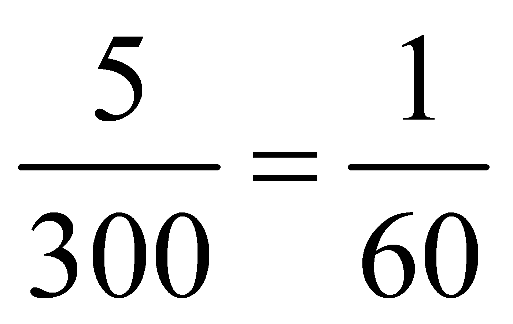
，又∵总标记鸟数为50只，
∴
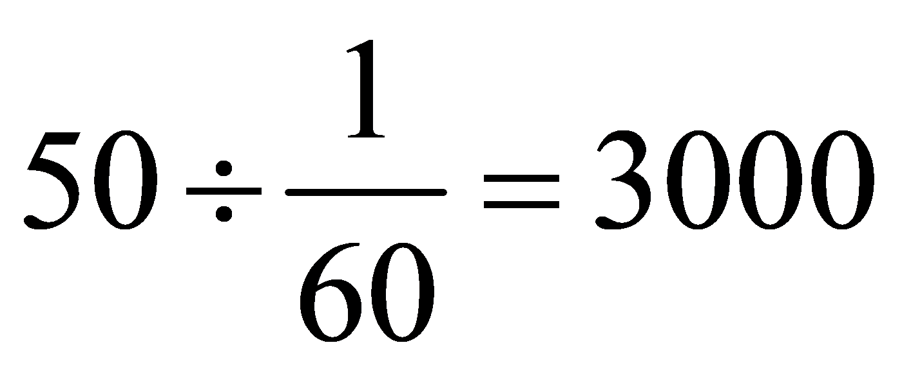
∴估计这片山林中喜鹊的数量为3000只．
故选：C．
6．某中学八年级五班同学纷纷捐出自己的零花钱，为建档立卡的贫困学生献爱心，该班第2小组8名同学捐款数额如下（单位：元）：12，5，10，5，20，10，10，8．这组捐款数据中，“10”出现的频率是（ ）
A． B．
B． C．
C． D．
D．
【答案】B
【分析】本题考查了频率，掌握频率的概念及求法是解题的关键；根据频率的定义求解即可．
【详解】解： “10”在这组数据中出现了3次，
“10”在这组数据中出现了3次，
 “10”出现的频率是
“10”出现的频率是
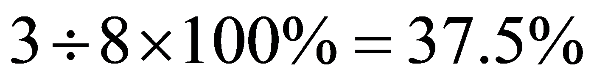
，故选： ．
．
7．今年我市有近7万名考生参加中考，为了解这些考生的数学成绩，从中抽取1000名考生的数学成绩进行统计分析，以下说法正确的是（ ）
A．这1000名考生是总体的一个样本 B．近7万名考生是总体
C．每位考生的数学成绩是个体 D．1000名考生是样本容量
【答案】C
【分析】本题考查了总体，样本，样本容量，个体．总体是指考查的对象的全体，个体是总体中的每一个考查的对象，样本是总体中所抽取的一部分个体，而样本容量则是指样本中个体的数目．我们在区分总体、个体、样本、样本容量，这四个概念时，首先找出考查的对象．从而找出总体、个体．再根据被收集数据的这一部分对象找出样本，最后再根据样本确定出样本容量．据此进行分析，即可作答．
【详解】解：A、这1000名考生的数学成绩是总体的一个样本，故该选项不符合题意；
B、近7万名考生的数学成绩是总体，故该选项不符合题意；
C、每位考生的数学成绩是个体，故该选项符合题意；
D、1000是样本容量，故该选项不符合题意；
故选：C
8．甲、乙两所学校男女生比例情况如图，若甲学校有1000人，乙学校有1250人，则（ ）
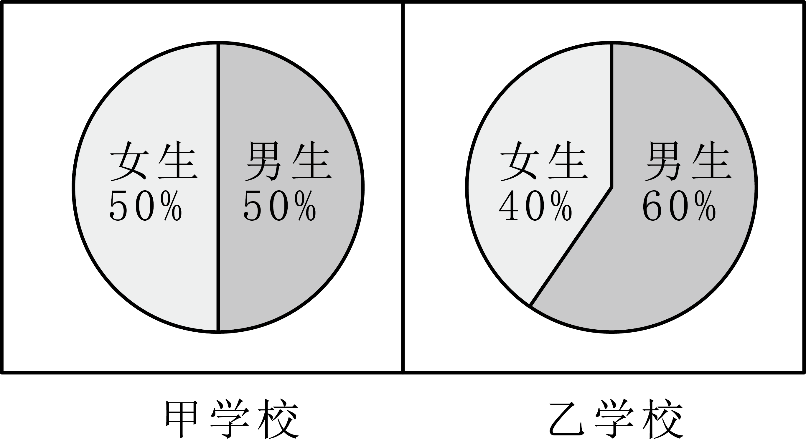
A．甲校与乙校的女生一样多 B．甲校的女生比乙校的女生多
C．甲校的女生比乙校的女生少 D．甲校与乙校男生共是1350人
【答案】A
【分析】本题考查扇形统计图及相关计算，熟练掌握扇形统计图的意义是解题的关键．根据扇形统计图的意义以及两个学校的人数求出两校的女生人数和甲校与乙校男生总人数，再对照四个选项依次判断即可．
【详解】解：甲校女生数为
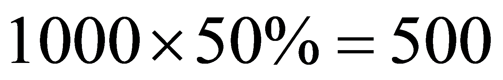
（人），乙校女生数为
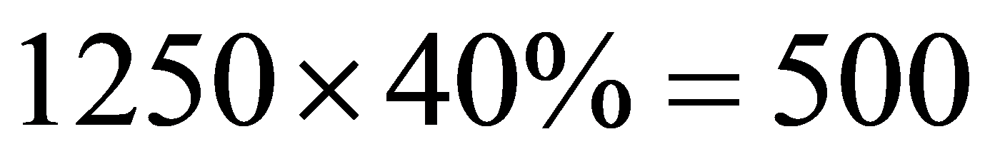
（人），则甲校与乙校的女生一样多，故A选项正确，B、C选项错误，
甲校男生数为（人），
乙校男生数为
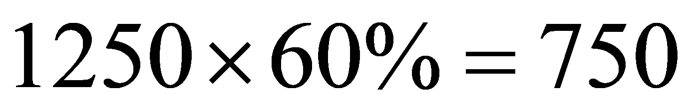
（人），甲校与乙校男生共是
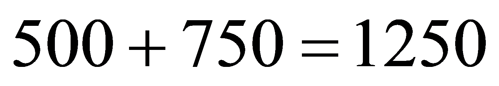
（人），故D选项错误．故选：A．
9．为了检查近期期末复习的教学效果，数学老师把某班的期末测评成绩进行了统计，得到如图所示的频数分布直方图（每组含前一个边界值，不含后一个边界值）．下列说法错误的是（ ）

A．全班一共有40人
B．数学老师按成绩范围分成了5组，组距是10
C．不及格（ 分）的人数有2人
分）的人数有2人
D．图中从左往右第三组的人数最多
【答案】C
【分析】本题考查直方图，从直方图中有效的获取信息，逐一进行判断即可．
【详解】解：A、全班一共有
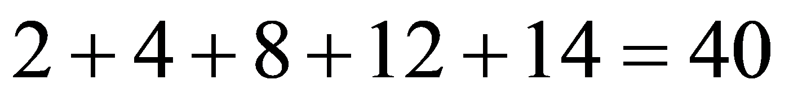
人，正确，不符合题意；B、由图可知，数学老师按成绩范围分成了5组，组距是10，正确，不符合题意；
C、不及格（分）的人数有4人，原说法错误，符合题意；
D、图中从左往右第三组的人数最多，正确，不符合题意；
故选C．
10．为了解七年级女生的身高情况，数学活动小组随机调查了七年级 名女生的身高
名女生的身高 （单位：
（单位：
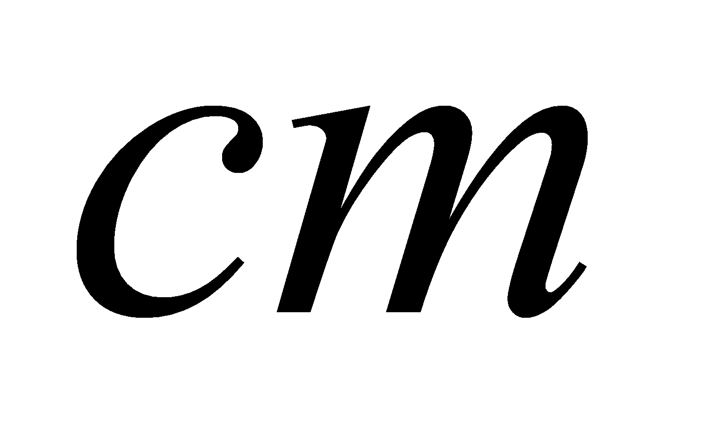
），收集到的数据如下：

小雷同学选择通过频数分布直方图分析各个身高段女生的人数．下面是画频数分布直方图的步骤：（顺序打乱）
①找到这组数据的最大值、最小值分别为 ，并计算出它们的差为
，并计算出它们的差为 ；
；
②用横轴表示身高，纵轴表示人数，画出频数分布直方图；
③将所有数据分为 组：A．
组：A．
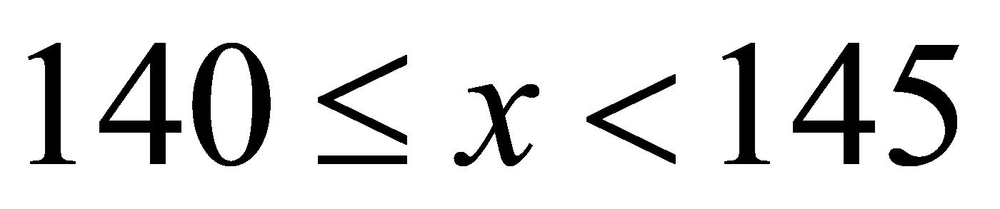
，B． ，C．
，C． ，D．
，D． ，E．
，E． ；
；④对落在各组内的数据进行累计，得到各组内数据的个数，列出频数分布表．
画频数分布直方图的步骤排序正确的是（ ）
A．③②④① B．①④③② C．③①④② D．①③④②
【答案】D
【分析】本题考查的知识点是频数分布直方图的绘制步骤．
【详解】解：绘制频数分布直方图的一般步骤为：
先确定数据的最大值、最小值并计算极差，对应①；
然后进行分组，对应③；
接着统计每组的频数，列出频数分布表，对应④；
最后绘制频数分布直方图，对应②；
故画频数分布直方图的步骤排序正确的是①③④②．
故选：D．
二、填空题（本大题共6小题，每小题3分，共18分）
11．你们学校所有教师下班采用的交通方式为 数据．（填“定量”或“定性”）
【答案】定性
【分析】本题考查了调查收集数据的过程与方程：正确理解调查收集数据的过程与方法是解决问题的关键．根据调查收集数据的过程与方法解答．
【详解】解：学校所有教师下班采用的交通方式为定性数据．
故答案为：定性
12．2023年5月30日，神舟十六号载人飞船发射圆满成功．调查“神舟十六号”载人飞船零件的质量，适合采用 调查．（填“全面”或“抽样”）
【答案】全面
【分析】本题考查的是抽样调查和全面调查的区别，选择普查还是抽样调查要根据所要考查的对象的特征灵活选用，一般来说，对于具有破坏性的调查、无法进行普查、普查的意义或价值不大，应选择抽样调查，对于精确度要求高的调查，事关重大的调查往往选用普查．
根据普查得到的调查结果比较准确，但所费人力、物力和时间较多，而抽样调查得到的调查结果比较近似解答．
【详解】解：调查“神舟十六号载人飞船”的各零件合格情况，设计安全性，宜采用全面调查．
故答案为：全面．
13．为估计鱼塘里有多少鱼，先从鱼塘中捕捞100条鱼做上标记，然后放回鱼塘，经过一段时间，待有标记的鱼完全混于鱼塘后，再捕捞200条鱼，发现其中10条有标记，那么估计鱼塘中大约有鱼 条．
【答案】2000
【分析】本题考查利用样本估计总体，根据样本估计总体的思想进行求解即可．
【详解】解：
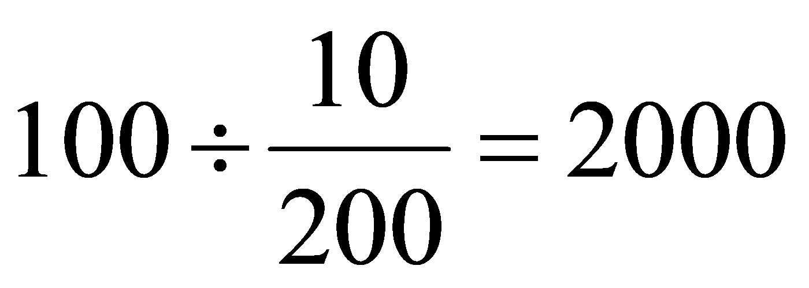
（条）．故答案为：2000
14．空气质量指数（ ）的值取整数时，在
）的值取整数时，在
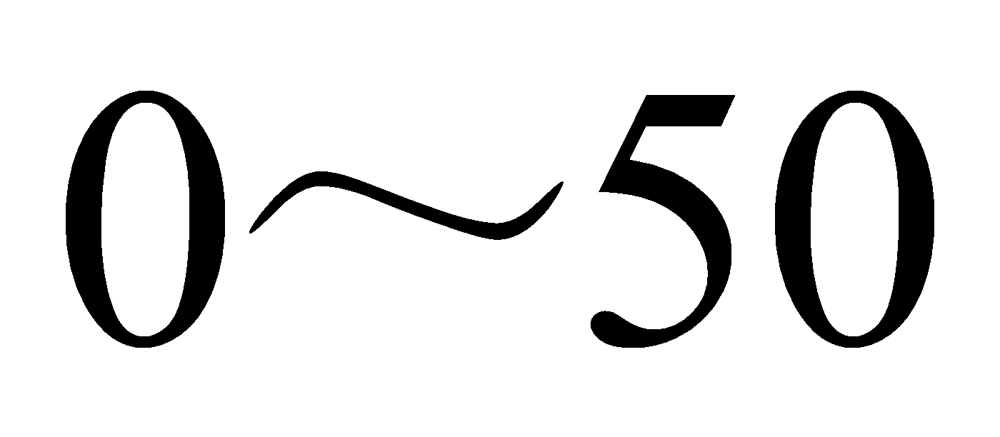
范围内空气质量类别为优，在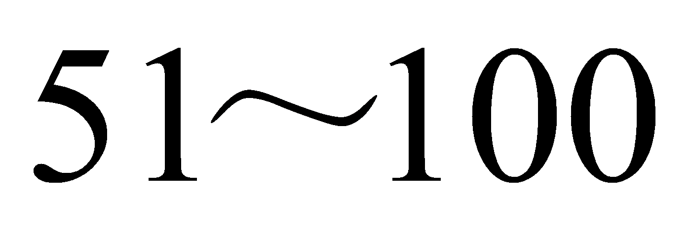
范围内空气质量类别为良，在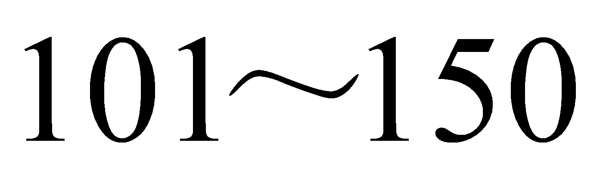
范围内空气质量类别为轻度污染． 按照某区最近一段时间的画出的频数分布直方图如图所示．若在过去的一段时间内，空气质量类别为优和良的天数共124天，则这段时间大约为 天．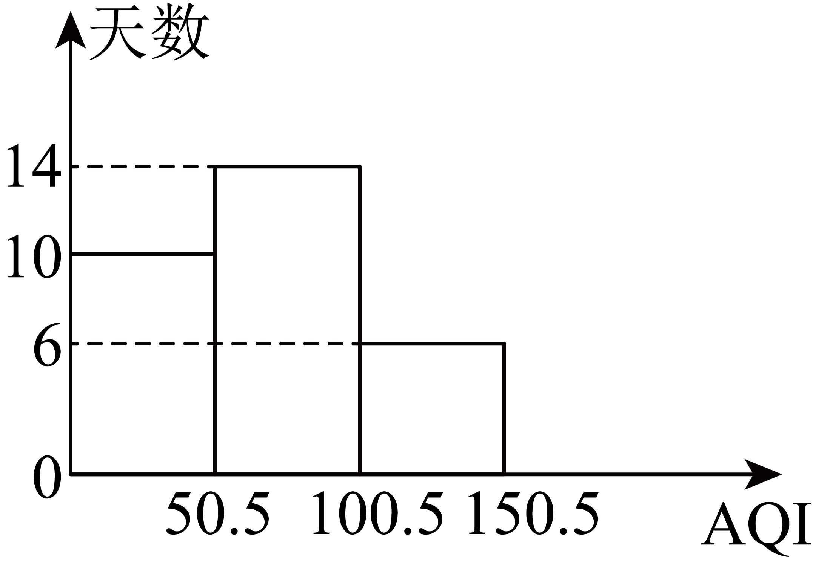
【答案】155
【分析】本题考查的是数据的分析，解题关键点是从统计图获取信息，设总时间为天，根据统计图结合优和良的天数共124天列方程解决即可．
【详解】解：设总时间为天，
则
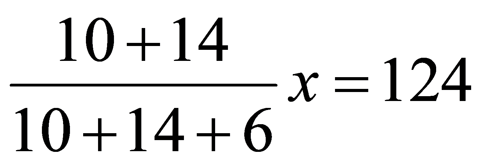
，解得
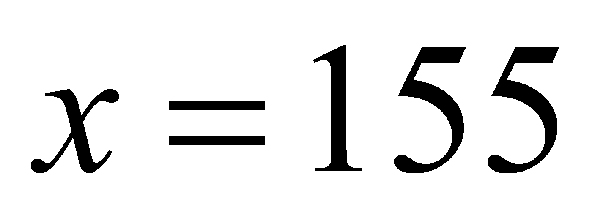
，故答案为：155．
15．空气质量状况已引起全社会的广泛关注，某市统计了去年每月空气质量达到良好以上的天数，整理后制成如图1所示的折线统计图和如图2所示的扇形统计图．
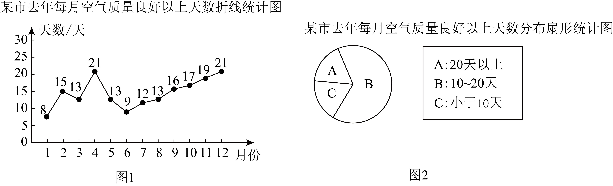
根据以上信息解答下列问题：该市去年空气质量连续提升的月份范围是 ；扇形统计图中扇形A的圆心角的度数为 ．
【答案】 6～12月 
【分析】本题考查了折线统计图与扇形统计图，根据折线统计图可得去年空气质量连续提升的月份范围，良好的天数为 天，根据
天，根据 的占比乘以
的占比乘以 ，即可求得扇形统计图中扇形A的圆心角的度数．
，即可求得扇形统计图中扇形A的圆心角的度数．
【详解】解：由折线统计图知，连续提升的月份范围是6～12月，良好的月数为个月，扇形统计图中扇形A的圆心角的度数为
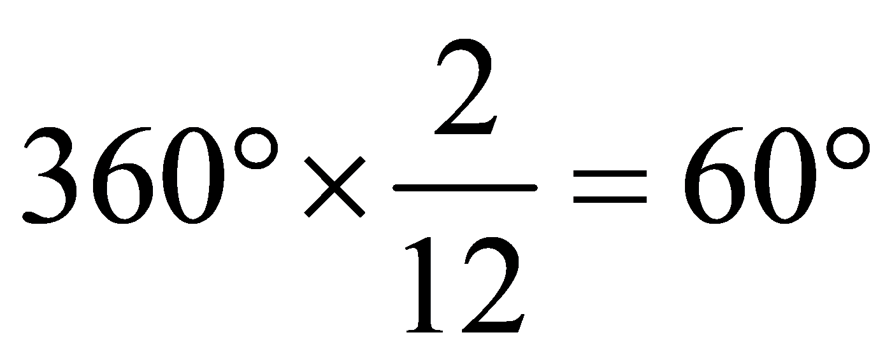
故答案为：6～12月，．
16．如图是某公司去年第一季度资金投放总额与1∼4月份利润统计图，若知1∼4月份利润的总和为 万元，根据图中的信息判断，得出下列结论：①公司去年1∼3月份投资总额最高的是三月份；②公司去年第一季度中3月份的利润率最高；③公司去年4月份的资金投放总额比1月份高；④公司去年4月份利润为
万元，根据图中的信息判断，得出下列结论：①公司去年1∼3月份投资总额最高的是三月份；②公司去年第一季度中3月份的利润率最高；③公司去年4月份的资金投放总额比1月份高；④公司去年4月份利润为 万元．其中正确的结论是 ．
万元．其中正确的结论是 ．

【答案】①③④
【分析】本题考查条形统计图与折线统计图，能够熟练地从条形统计图与折线统计图中找到信息是解题的关键，由条形统计图可知，公司去年1∼3月份投资总额最高的是三月份，由折线统计图可知，公司去年第一季度中2月份的利润率最高，由条形统计图和折线统计图可得1，2，3月份的利润，进而可得4月份的利润以及4月份投资总额，进而可得答案．
【详解】解：由条形统计图可知，公司去年1∼3月份投资总额最高的是三月份，
故结论①正确，符合题意；
由折线统计图可知，公司去年第一季度中2月份的利润率最高，
故结论②不正确，不符合题意；
由题意得，公司去年第一季度1月份的利润为
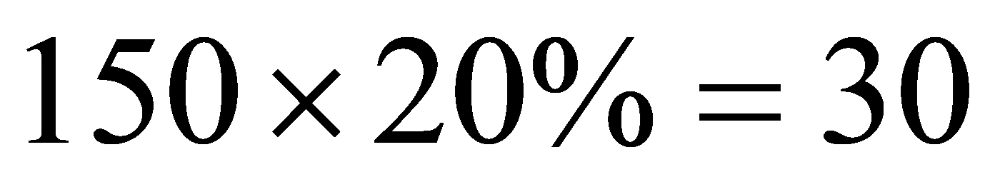
（万元），2月份的利润为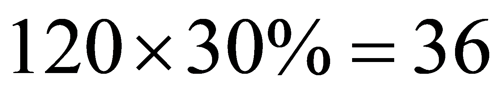
（万元），3月份的利润为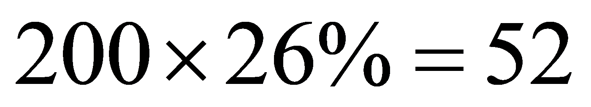
(万元），∴公司去年4月份的利润为
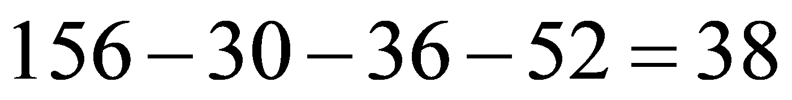
（万元），∴公司去年4月份投资总额为
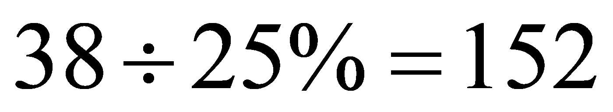
（万元），∴公司去年4月份的资金投放总额比1月份高，
故结论③④正确，符合题意．
综上所述，正确的结论有①③④．
故答案为：①③④．
三、解答题（第17，18，19，20题，每题6分；第21，22，23题，每题8分；第24，25题，每题12分；共9小题，共72分）
17．下列调查采用哪种调查方式更合适？
(1)调查一片试验田里某种大麦的穗长情况；
(2)调查一个班级中的学生对建立班级生物角的看法；
(3)调查人们保护海洋的意识．
【答案】(1)适合采用抽样调查
(2)适合采用全面调查
(3)适合采用抽样调查
【分析】本题主要考查了全面调查与抽样调查的知识点，准确分析是解题的关键．调查方式的选择需要将普查的局限性和抽样调查的必要性结合起来，具体问题具体分析即可；．
（1）根据范围广的特点，适合采用抽样调查；
（2）根据调查范围小，人员不多，适合采用全面调查；
（3）根据范围广的特点，适合采用抽样调查．
【详解】（1）解：调查一片试验田里某种大麦的穗长情况，适合采用抽样调查；
（2）解：调查一个班级中的学生对建立班级生物角的看法，适合采用全面调查；
（3）解：调查人们保护海洋的意识，适合采用抽样调查．
18．下列调查问题设计得合理吗？为什么？
(1)你每天睡眠充足吗？
(2)你们学校的环境噪声是否在 以下？
以下？
(3)大多数同学认为学校操场应该铺设塑胶跑道，你同意吗？
【答案】(1)不合理，理由见解析
(2)不合理，理由见解析
(3)不合理，理由见解析
【分析】本题考查的是调查问题的合理性的判断；
（1）从调查的问题是否具有主观判断，有没有统一的标准出发分析即可；
（2）从调查的问题是否具有可操作性出发分析即可；
（3）从调查的问题是否引导有引导或暗示性出发分析即可；
【详解】（1）解：不合理，因为睡眠充足是主观判断，没有统一的标准．
（2）解：不合理，因为学生无法测量学校的环境噪声．
（3）解：不合理，因为大多数同学认为会引导被调查者从众回答．
19．解答下列问题：
(1)某报纸上刊登了一则新闻：“某种品牌的节能灯的合格率为 ．”这则新闻______________（填“能”或“不能”）说明市面上所有这种品牌的节能灯恰有
．”这则新闻______________（填“能”或“不能”）说明市面上所有这种品牌的节能灯恰有 不合格，这则新闻应来源于______________（填“普查”或“抽样调查”）．
不合格，这则新闻应来源于______________（填“普查”或“抽样调查”）．
(2)下表是随机抽样调查的两种品牌的同类产品的情况，有人由此认为“A品牌的不合格率比B品牌低，更让人放心．”你同意这种说法吗？为什么？
品牌 | A品牌 | B品牌 |
被检测数 | 200 | 10 |
不合格数 | 15 | 1 |
【答案】(1)不能，抽样调查
(2)不同意，因为B品牌调查的样本数量太少，不具有代表性和广泛性
【分析】本题考查了概率的意义，抽样调查与全面调查，掌握抽样调查的意义是解题关键．
（1）根据概率的意义即可得出答案；根据抽样调查的适用范围，即可得出答案；
（2）根据抽样调查的优点和弊端分析即可．
【详解】（1）解：某报纸上刊登了一则新闻：“某种品牌的节能灯的合格率为．”这则新闻不能说明市面上所有这种品牌的节能灯恰有不合格，这则新闻应来源于抽样调查，
故答案为：不能，抽样调查；
（2）解：不同意，因为B品牌调查的样本数量太少，不具有代表性和广泛性（答案不唯一）．
20．某校有4000名学生，从不同年级不同班级中随机抽取了400名学生进行调查，这400名学生早晨的起床方式的统计表如下：
起床方式 | 别人叫醒 | 闹钟 | 自己醒来 | 其他 |
人数 | 172 | 88 | 64 | 76 |
(1)请指出该调查中的总体、个体、样本．
(2)试估计全校学生中早晨自己醒来的人数．
【答案】(1)总体：某校4000名学生的早晨起床方式；个体：每名学生的早晨起床方式；样本：抽取的400名学生的早晨起床方式．
(2)估计全校学生中自己醒来的人数为640
【分析】此题考查了总体、个体、样本，样本估计总体，解题的关键是掌握以上知识点．
（1）根据总体、个体、样本的定义求解即可；
（2）用总人数乘以样本中自己醒来的人数所占的百分比求解即可．
【详解】（1）解：总体：某校4000名学生的早晨起床方式；
个体：每名学生的早晨起床方式；
样本：抽取的400名学生的早晨起床方式；
（2）解：
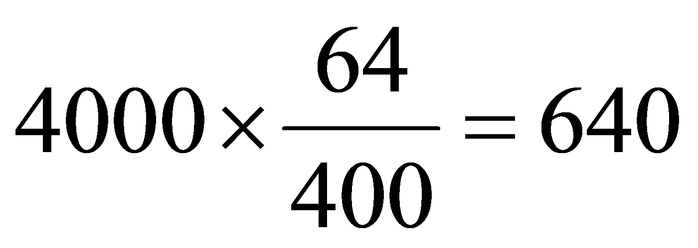
（名）．所以估计全校学生中自己醒来的人数为640．
21．在东京奥运会田径男子百米半决赛中，中国选手苏炳添以 秒的成绩晋级决赛，成为首位闯入奥运会男子百米决赛的中国人，某校为了解学生百米跑成绩，在各个年级抽取部分同学开展百米跑测试，成绩分为A，B，C，D四个等级，并绘制成以下两幅不完整的统计图．
秒的成绩晋级决赛，成为首位闯入奥运会男子百米决赛的中国人，某校为了解学生百米跑成绩，在各个年级抽取部分同学开展百米跑测试，成绩分为A，B，C，D四个等级，并绘制成以下两幅不完整的统计图．

(1)此次测试的总人数为_______人，其中成绩为B等级的学生有_______人；
(2)C等级在扇形统计图中对应的圆心角的度数为_______度；
(3)若成绩为A等级或B等级为合格，已知该校共有1400人，试估计全校合格的学生人数．
【答案】(1)400，160
(2)72
(3)全校合格的学生有980人
【分析】本题主要考查用样本估计总体、条形统计图、扇形统计图，理解不同统计图所表示的含义，从统计图中获取解题所需信息是解题关键．
（1）测试的总人数
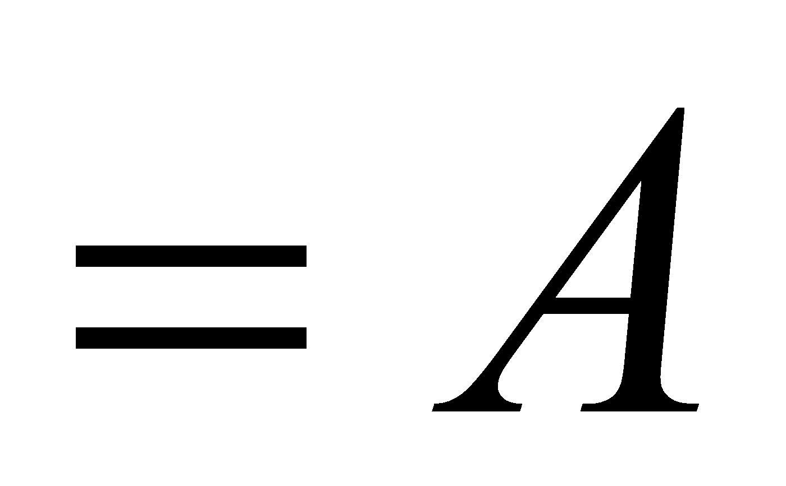
等级的学生人数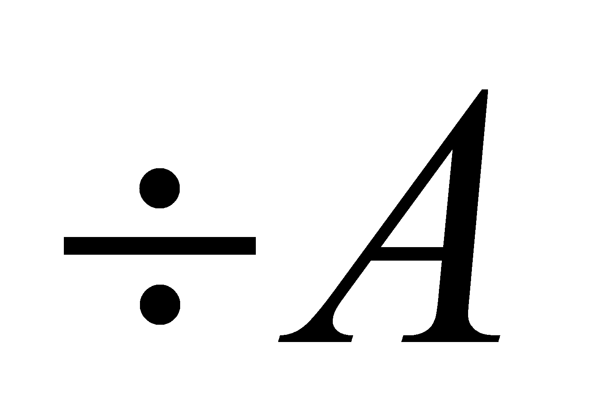
等级学生人数所占的百分比，B等级的学生人数=测试的总人数 （A等级的学生
（A等级的学生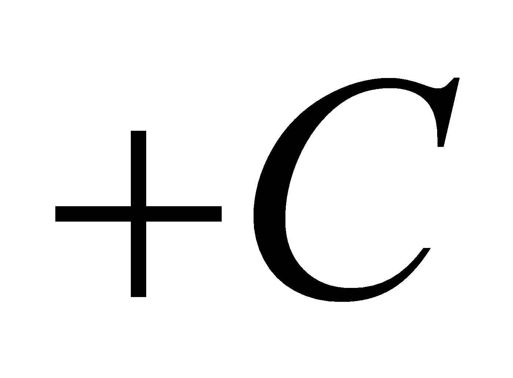
等级的学生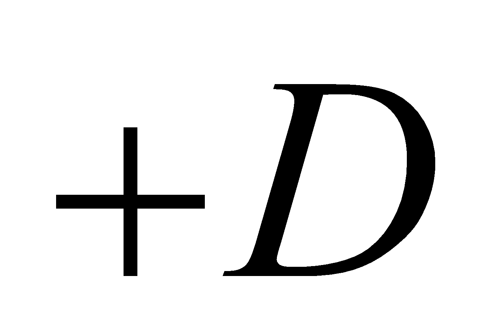
等级的学生）．（2）C等级在扇形统计图中对应的圆心角的度数
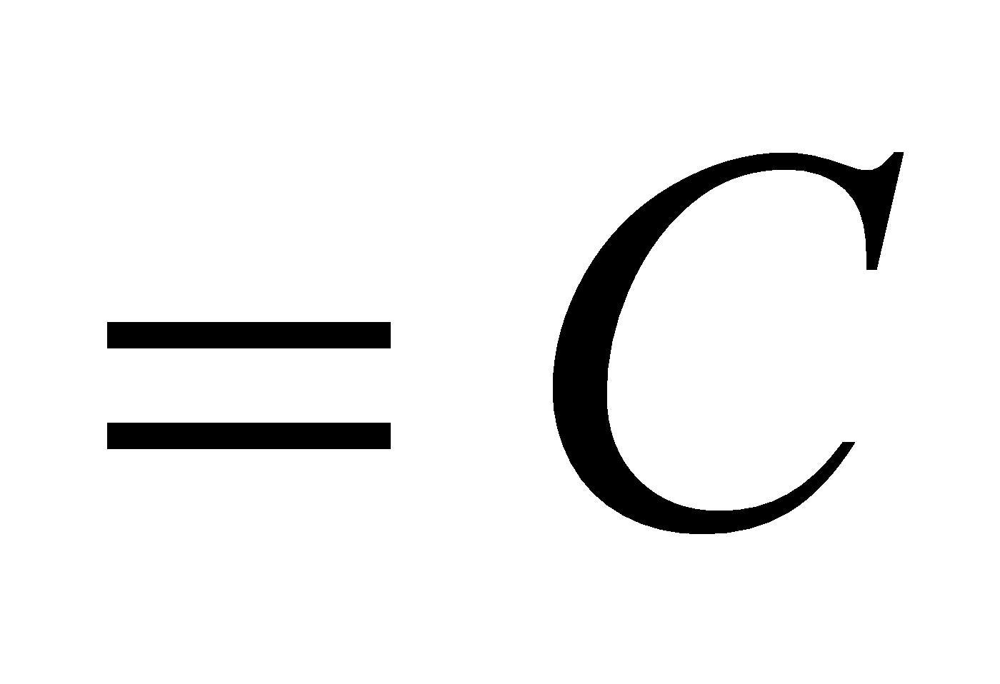
等级学生人数所占的百分比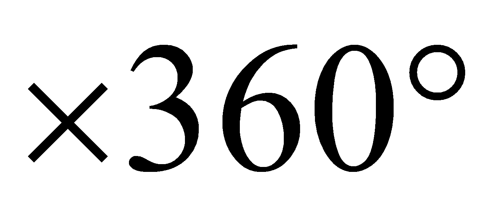
，C等级学生人数所占的百分比等级学生人数÷测试的总人数．（3）求出B等级在扇形统计图中所占的百分比，则估计全校合格的学生人数
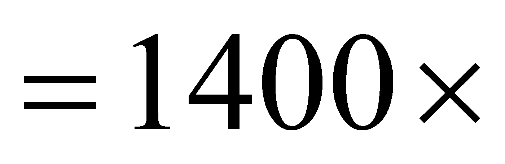
（A等级学生人数所占的百分比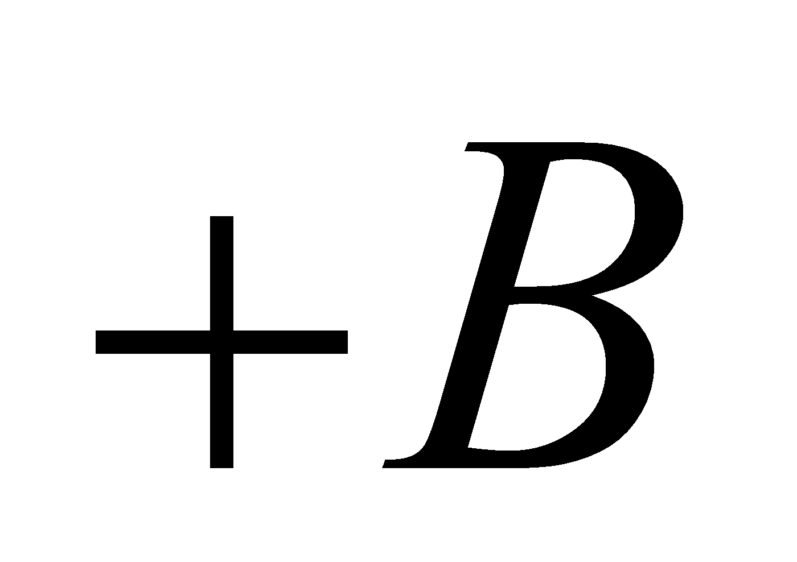
等级学生人数所占的百分比）．【详解】（1）解：根据题意得此次测试的总人数为
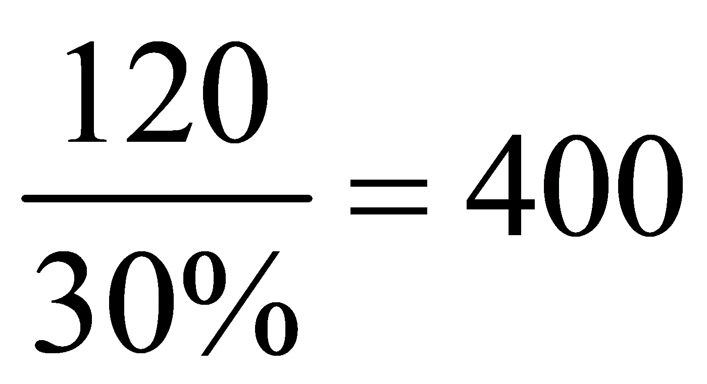
（人），B等级的学生人数为
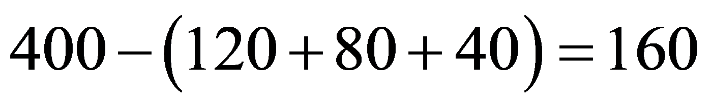
（人）．故答案为：400，160．
（2）解：C等级学生人数所占的百分比为
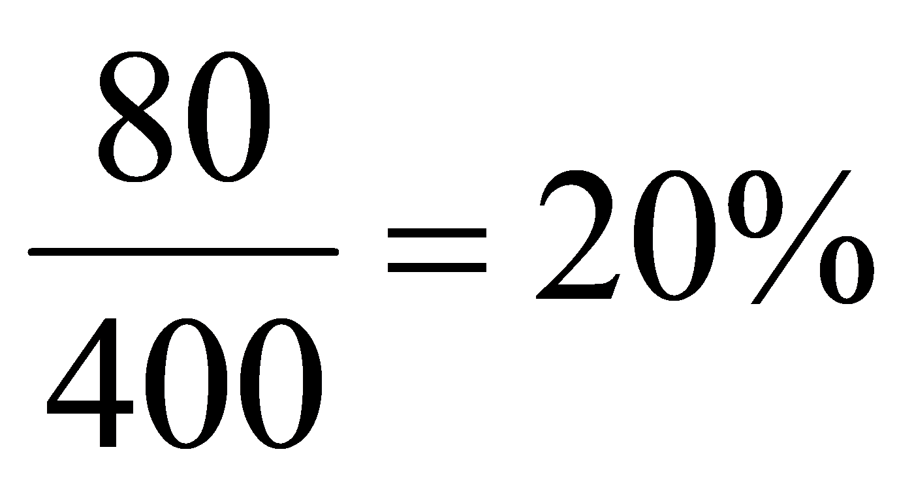
，∴C等级在扇形统计图中对应的圆心角的度数为
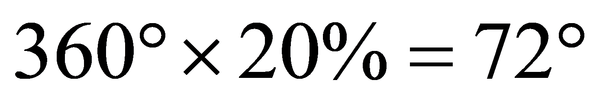
．故答案为：72．
（3）解：B等级在扇形统计图中所占的百分比为
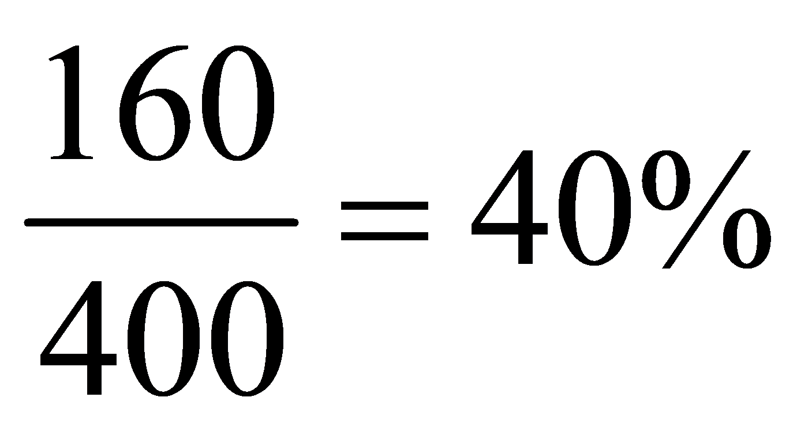
，∴估计全校合格的学生有
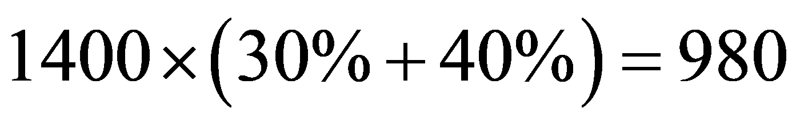
（人）．22．列表、画图、统计
为了了解中学生的身体发育情况，对某一中学同年龄的50名男学生的身高进行了测量，结果如下（单位：cm）：
175 168 170 176 167 181 162 173 171 177
179 172 165 157 172 173 166 177 169 181
160 163 166 177 175 174 173 174 171 171
158 170 165 175 165 174 169 163 166 166
174 172 166 172 167 172 175 161 173 167
频数分布表
身高分组 | 频数划记 | 频数 |
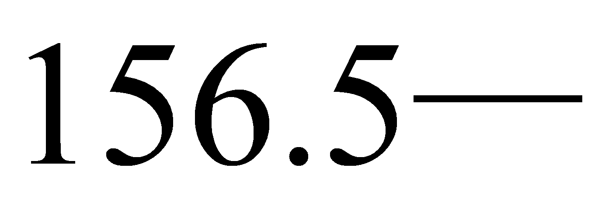 | ||
合计 | 50 |

(1)按组距为4，将题中所给的样本整理成频数分布表，画出频数分布直方图．
(2)身高在哪个范围内人数最多？身高超过 的学生占同年龄的50名男学生的百分之几？
的学生占同年龄的50名男学生的百分之几？
【答案】(1)见解析
(2)
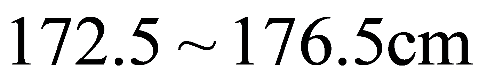
范围人数最多，
【分析】本题考查了频数与频率的概念，利用相关概念正确将表格填写完整是解题的关键．
（1）先确定数据的最小值、最大值与组距，划分合适的身高分组区间，再逐一统计每个区间内数据的个数（频数），完成频数分布表，最后依据频数分布表绘制频数分布直方图．
（2）对比频数分布表中各组频数，找出频数最大的身高区间；统计身高超过的频数，用该频数除以总人数50，再乘以
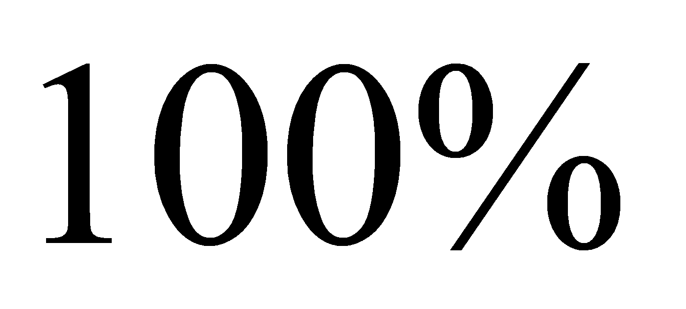
得到占比．【详解】（1）
身高分组 | 频数划记 | 频数 |
| 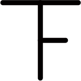 | 3 |
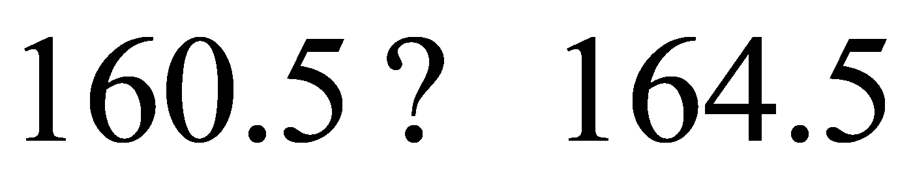 |
| 4 |
| 正正丅 | 12 |
| 正正丅 | 12 |
| 正正 | 13 |
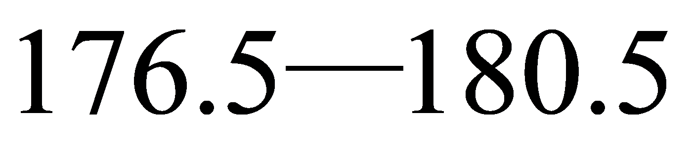 |
| 4 |
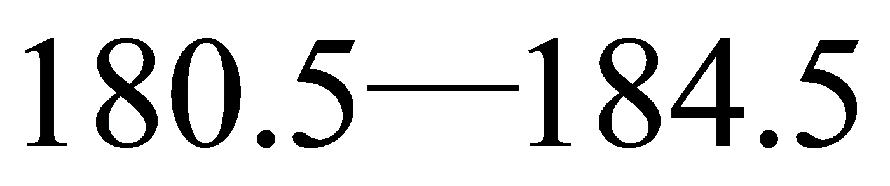 | 丅 | 2 |
合计 | 50 | 50 |


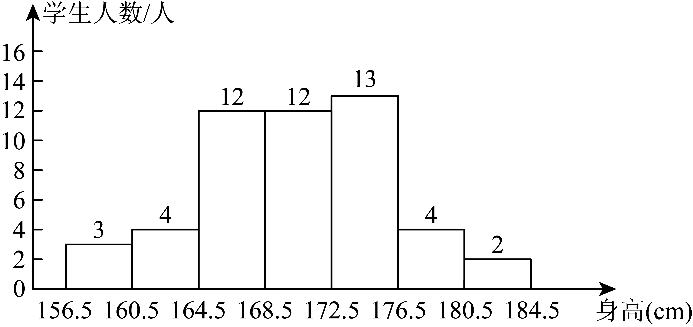
（2）通过对比各组频数可知身高在范围内的人数最多，共13人．
所以，身高在范围人数最多
因为，超过的频数有 人
人
所以，
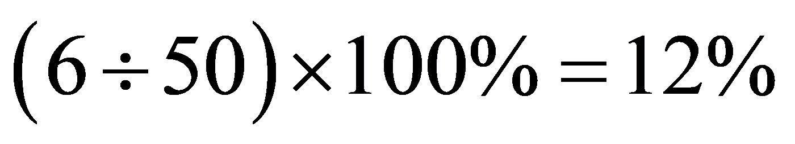
．23．2015年是中国抗日战争胜利70周年暨世界反法西斯战争胜利70周年．某校为纪念中国抗日战争胜利70周年，对全校学生进行了“抗日战争知多少”知识测验．然后随机抽取了部分学生的成绩，整理并制作如图所示的图表．
分数段 | 频数 | 频率 |
| 30 | 0.1 |
| 90 | m |
| n | 0.4 |
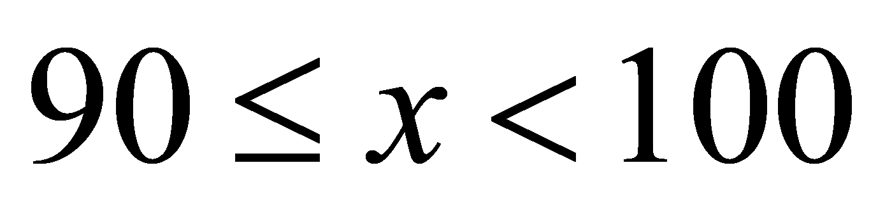 | 60 | 0.2 |


请你根据图表中提供的信息，解答下列问题：
(1)在频数分布表中： _____，
_____， _____；
_____；
(2)补全频数分布直方图；
(3)如果某校有2000名学生，比赛成绩80分以上为优秀，那么你估计此次测验成绩的优秀人数大约是_____人．
【答案】(1) ，120；
，120；
(2)见解析；
(3)1200．
【分析】本题主要考查了频数分布直方图、频数分布表、画直方图、用样本估计整体等知识点，利用统计图获取信息成为解题的关键．
（1）根据第一组的频数是30,频率是0．1，求得总人数，用1减去其它组的频率即可求得m，然后根据频率的定义即可求得n的值；
（2）根据（1）即可补全频数分布直方图即可；
（3）利用总人数2000乘以对应的频率即可求解．
【详解】（1）解：测试的总人数是：（人），
，．
故答案是：，120．
（2）解：如图所示：
；
（3）解：（人）．
24．为增强学生消防意识，某校举行了一次全校2400名学生参加消防知识竞赛．从中随机抽取 名学生的竞赛成绩进行了分析，把成绩（满分100分，所有竞赛成绩均不低于60分）分成四个等级（
名学生的竞赛成绩进行了分析，把成绩（满分100分，所有竞赛成绩均不低于60分）分成四个等级（ ；
； ；；），并根据分析结果绘制了不完整的频数分布直方图和扇形统计图．
；；），并根据分析结果绘制了不完整的频数分布直方图和扇形统计图．

请根据以上信息，解答下列问题：
(1)填空： ， ；
(2)请补全频数分布直方图；
(3)扇形统计图中 等级所在扇形的圆心角度数为 度；
等级所在扇形的圆心角度数为 度；
(4)若把等级定为“优秀”等级，请你估计该校参加竞赛的2400名学生中达到“优秀”等级的学生人数．
【答案】(1)150，36
(2)见解析
(3)144
(4)374人
【分析】（1）根据等级的频数和所占的百分比，可以求得的值，根据 等级的频数和的值，可以求得
等级的频数和的值，可以求得 的值；
的值；
（2）根据（1）中的值和频数分布直方图中的数据，可以计算出 等级的频数，从而可以将频数分布直方图补充完整；
等级的频数，从而可以将频数分布直方图补充完整；
（3）利用 乘以等级的百分比即可；
乘以等级的百分比即可；
（4）利用2400乘以等级的百分比即可．
本题考查频数分布直方图、扇形统计图、用样本估计总体，解答本题的关键是明确统计图的特点，利用数形结合的思想解答．
【详解】（1）解： ，
，
；
故答案为：150，36；
（2）等级学生有：（人 ，
，
补全的频数分布直方图，如图所示：
（3）扇形统计图中等级所在扇形的圆心角度数为；
故答案为：144；
（4）解：（人），
答：估计该校参加竞赛的2400名学生中达到“优秀”等级的学生人数有374人．
25．尊老敬老是中华民族的传统美德，爱老是全社会的共同责任．为了解某地区老年人的生活状况，随机抽取部分65岁及以上的老年人进行了一次问卷调查．
调查问卷 以下问题均为单选题，请根据实际情况选择（例：65~70岁表示大于等于65岁同时小于70岁）． 1．您的年龄范围（ ） A．65~70岁 B．70~75岁 C．75~80岁 D．80岁及以上 2．您的养老需求（ ） A．医疗服务 B．社交娱乐 C．健身活动 D．餐饮服务 E．其他 3．您的健康状况（ ） A．良好 B．一般 C．较差 |
将调查结果绘制成如下统计图表请阅读相关信息，解答下列问题：

健康状况统计表
65～70岁 | 70～75岁 | 75～80岁 | 80岁及以上 | |
良好 | 65% | 58% | 50% | 40% |
一般 | 25% | 30% | 359% | 40% |
较差 | 10% | 12% | 15% | 20% |
(1)参与本次调查的老年人共有___________人，有“医疗服务”需求的老年人有___________人；
(2)已知该地区65岁及以上的老年人人口总数约为6万人，估计该地区健康状况较差的老年人人口数；
(3)根据以上信息，针对该地区老年人的生活状况，你能提出哪些合理化的建议？（写出一条即可）
【答案】(1)1200，660
(2)7650人
(3)根据养老需求统计图可知，医疗服务需求占比大，因此建议提高本地区老年人的医疗服务质量（只要建议合理即可）
【分析】（1）根据样本容量等于所有的频数和解答即可，列式解答即可；
（2）利用样本估计总体的思想列式解答即可；
（3）根据以上信息，针对该地区老年人的生活状况，选择一条解答即可．
本题考查了样本容量，样本估计总体，提出决策，熟练掌握样本容量，样本估计总体是解题的关键．
【详解】（1）解：根据样本容量等于所有的频数和，列式得：
（人），
根据题意，得（人），
故答案为：1200，660．
（2）解：根据题意，得该地区健康状况较差的老年人人口数为：（人）．
故估计该地区健康状况较差的老年人人口数为7650人．
（3）解：根据养老需求统计图可知，医疗服务需求占比大，因此建议提高本地区老年人的医疗服务质量．